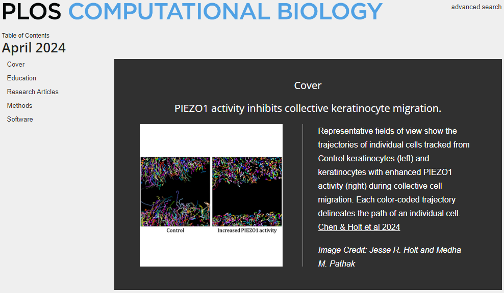

post
[NEWS] PIEZO1 regulation of collective keratinocyte migration
NEWS Originally published 2024-04-18
Welcome to read and cite our paper:
Jinghao Chen, Jesse R. Holt, Elizabeth L. Evans, John S. Lowengrub, Medha M. Pathak
PIEZO1 regulates leader cell formation and cellular coordination during collective keratinocyte migration.
PLOS Computational Biology (2024) 20(4): e1011855. https://doi.org/10.1371/journal.pcbi.1011855
Our paper is featured as the cover article for the April 2024 issue of the journal!